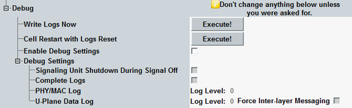

The "Debug" node configures the log file generation.
Do not enable the debug mode during regular operation. It impacts the test performance, timing, system drive usage, and so on. |

The settings are not affected by a reset or preset. They are not stored in save files. A reboot restores the default settings.
Writes the NB-IoT log files to the system drive.
Switches the cell signal off and on again with empty logs.
Enables the configuration of the "Debug Settings".
The complete log files are written if the signaling unit is shut down. The signaling unit is shut down if the instrument is shut down or if the CMW software is terminated.
With enabled checkbox, the signaling unit is also shut down if the cell signal is switched off. So switching off the cell delivers log files.
With disabled checkbox, only a reduced set of log files is written if the NB-IoT signaling instance is replaced by another signaling instance due to a resource conflict. This behavior saves time and system drive space.
With enabled checkbox, a complete set of log files is written if the NB-IoT signaling instance is replaced by another signaling instance.
These settings configure the level of detail of the log files.